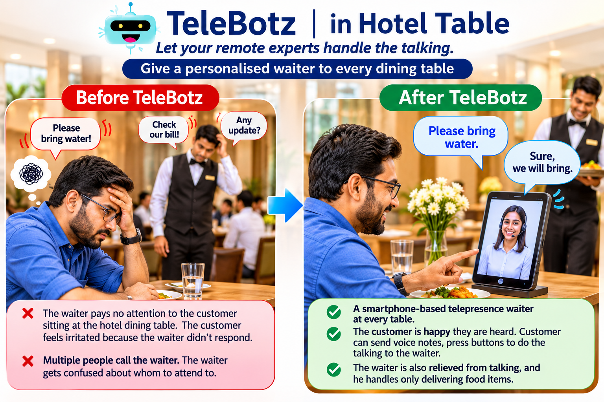

Before TeleBotz: guests wait to be heard
A customer may call repeatedly for water, a menu clarification, or the bill. If the waiter is occupied elsewhere, the request may go unanswered and the guest becomes frustrated.
Let your remote experts handle the talking.
Give a personalised waiter to every dining table.

During busy periods, one waiter may be handling several tables and repeated requests. Guests can feel ignored, while staff can become overwhelmed trying to decide whom to attend to first.
A customer may call repeatedly for water, a menu clarification, or the bill. If the waiter is occupied elsewhere, the request may go unanswered and the guest becomes frustrated.
Several tables may need attention at the same time. The waiter has to move between tables, remember requests, answer questions, and coordinate service.
Each table can be connected to the type of assistance that best suits the restaurant, the customer, and the time of day.
Connect the customer to a remote staff member who can listen, respond, clarify requests, and provide a personal touch.
An AI assistant can respond to routine questions and guide customers through common dining requests.
Offer an opportunity for people with disabilities to work remotely as customer-facing dining hosts, using the communication mode that works for them.
The remote waiter handles conversation and customer acknowledgement. On-site restaurant staff remain responsible for preparing, checking, and physically delivering food and other items. The exact features depend on the restaurant's app configuration and operating process.
The guest uses the table's TeleBotz connection to reach the selected waiter.
They can speak, leave a voice note, or type a message, depending on the selected service.
The remote human or AI assistant confirms that the request has been received.
The restaurant team fulfils the physical request, such as bringing water or serving food.
Greeting guests, answering questions, receiving requests, confirming details, and keeping customers informed.
Preparing, checking, and delivering food and drinks, and handling other tasks that require a physical presence.
Explore a TeleBotz dining-table pilot with human, AI, or inclusive remote-host options for your restaurant.
Discuss this use case